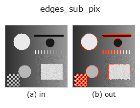

contour op• 資料種類:image → contour
• 呼叫:fullseye.apply(img, "edges_sub_pix", a=0.5, b=0.5)(2-D 的模型是一張圖 + 兩個純量旋鈕 a,b∈[0,1])
• HALCON 對應:edges_sub_pix(其含義與參數可參考 HALCON 手冊)
• GPU:有(許可清單中的機械式 GPU 路徑,CuPy)。device="auto" 在實測尺寸(4,194,304 像素)以上選擇 GPU

*圖為在 128×128 合成輸入上實際執行的輸出。左為輸入，右為輸出。點雲以俯視散點顯示(亮度 = z)，一維序列為折線，體資料為沿 z 的最大值投影，影片為中間影格，複數影像為振幅；無法成像的回傳值直接顯示數值。*
掃描旋鈕 a(0.1 / 0.5 / 0.9，另一旋鈕取預設):
▸ edges_sub_pix: 旋鈕 a 掃描 (文件網站)
*旋鈕 b 不改變輸出(實測: 0.1 / 0.5 / 0.9 相同)。*
換別的影像(合成場景 / 照片 / 硬幣。上排為輸入，下排為對應輸出。旋鈕取預設):
▸ edges_sub_pix: 其他輸入影像 (文件網站)
*第 4 欄是彩色 (H,W,3) 輸入。此運算子能正確處理顏色而不跨通道(不把顏色通道當作第三個空間軸摺積)。*
次像素精度的邊緣輪廓擷取。求出梯度及其法線方向(gradient_normals),以非極大值抑制(與 Canny 相同,只保留沿法線方向強於兩側的像素)細化為單像素寬,把超過閾值(0.15+0.5*a,以最大梯度正規化的強度)的像素連接成沿曲線排序的輪廓(在分支點拆成不同輪廓,封閉邊緣在起點封閉),再以拋物線擬合沿法線把各點精細化到次像素位置(subpixel_refine_edges,與 ops 側同名 op 共用的實作 —— 經 2026-09-02 的修正才成為真正的次像素;舊實作直接回傳整數像素座標)。相當於 HALCON 的 edges_sub_pix(Extract sub-pixel precise edges using Deriche, Lanser, Shen, or Canny filters.)。
每條輪廓的點沿曲線排序(相鄰點間距約 1 px),所以 length_xld 可量測邊緣長度,area_center_xld / circularity_xld 可量測封閉邊緣所圍的形狀(r = 18 px 的圓盤 length_xld 約 113 px = 2πr)。
★直到 2026-11-03,超過閾值的 2〜3 px 寬帶中的像素依光柵順序原樣放進一條輪廓 —— 同一圓盤的 length_xld 為 2508 px(點逐列往返)。與點順序無關的量(直線擬合 fit_line_contour_xld 等)與以前的值接近。
a 調整邊緣強度閾值。b 未使用。
Raises:
FsValueError: 含 NaN / inf 的影像。
• gallery2d_contour_measure 族使用指南
• 範例資料目錄(下載 URL / 授權) —— 2-D 用 skimage.data(BSD/公有領域)加合成圖,3-D 給出真實資料源(Stanford/PDS 等)的下載 URL。
• 運算子來歷與參考文獻 —— 該運算子族所依據的研究/方法出處。
• 演算法的正典(作者、年份)與用途見上面的族使用指南。
下面的程式已確認可以執行(與圖相同的輸入)。在 Studio 說明中，此區塊會變成按鈕，可當場載入並執行。
edges_sub_pix 0.50 0.50
• gallery2d_contour_measure — py -3.11 examples/gallery2d_contour_measure.py
• quickstart — py -3.11 examples/quickstart.py
contour 作為輸入)identity · select_contours · smooth_contours · fit_line_contours · contours_to_region · count_contours · total_length · select_contours_xld
contour)select_contours · smooth_contours · fit_line_contours · contours_to_region · sk_find_contours · lines_gauss · select_contours_xld · smooth_contours_xld
*Provenance: ops.py — 2D 運算子登記表。本條目由 tools/opdocs.py md 自動產生(請勿手動編輯)。*
© 2026 Kazufumi Furuse — Fullseye operator documentation. Licensed under Apache-2.0.